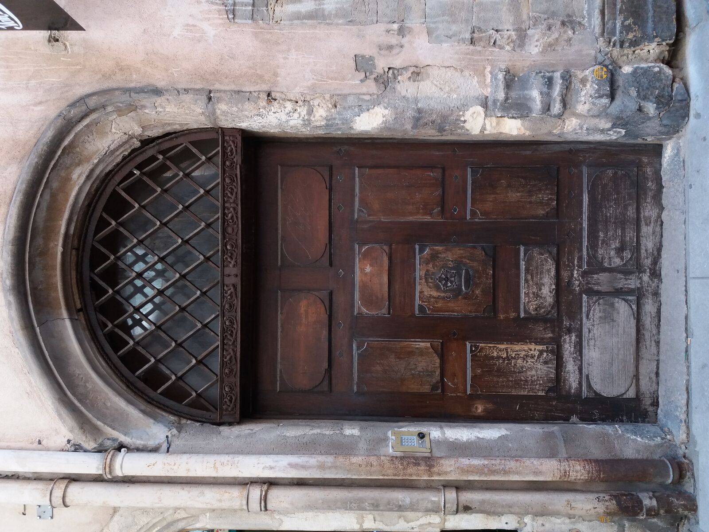

Home / Jewish Lyon guide / Mikveh in Lyon
Mikveh in Lyon
addresses and who to call
Lyon and Villeurbanne have several mikvahs. The only one with a published opening time is Mikvah Haya Mouchka, 60 rue Crillon in the 6th arrondissement, listed as open nightly. Call or write before you travel: appointment rules are not published for the others.
- 8 mikvahs listed
- Mikvah Haya Mouchka: open nightly
- Call before you travel
- Checked 7 October 2026

The mikvah to start with
Mikvah Haya Mouchka, 60 rue Crillon, 69006 Lyon. Attached to Beth Habad Lyon 6e, under the supervision of Rabbi Yoel Nemanow. Hours listed: open nightly. Contact person listed: Mme Nemanow, 06 06 53 67 63, mikvelyon@gmail.com. Website listed: mikvelyon.fr. The mikvah follows the Chabad custom and is listed with a bor al gabei bor and a bor geshamim below the immersion pool.
No online booking is published. Write or call with your dates, and say that you are travelling.
Mikvahs in Lyon and Villeurbanne 8
- Mikvah Haya Mouchka Chabad. Listed as open nightly.60 rue Crillon, 69006 LyonMap
- Mikvah Neveh Chalom At the Sephardi synagogue. Hours: not published. Phone is the synagogue's.317 rue Duguesclin, 69007 LyonMap
- Mikvah Chaare Tzedek Hours: not published.18 rue Saint-Mathieu, 69008 LyonMap
- Mikvah Centre Rav Hida La Duchère. Hours: not published.501 avenue de la Sauvegarde, 69009 LyonMap
- Mikvah La Fraternité Hours: not published.4 rue Malherbe, 69100 VilleurbanneMap
- Mikvah École Juive Hours: not published.40 rue Alexandre-Boutin, 69100 VilleurbanneMap
- Mikvah Yeshiva Pinto Hours: not published.20 bis rue des Mûriers, 69100 VilleurbanneMap
- Mikvah Saint-Fons Outside Lyon. Hours: not published.17 rue Albert-Thomas, 69190 Saint-FonsMap
Source: mikvah.org directory, Lyon and Villeurbanne listings, read on 7 October 2026. The directory says its listings are updated by the community. The Consistoire régional de Lyon states that it maintains the community's mikvahs (consistoireregionaldelyon.org).
The mikvahs on the map
Six mikvahs of Lyon and Villeurbanne. Tap a marker for directions.




How to ask
- 1
Choose one
Pick the mikvah nearest your hotel. Mikvah Haya Mouchka is about 35 minutes on foot from Tilsitt, so on Shabbat choose one within walking distance of where you sleep.
- 2
Write or call early
Give your dates and say that you are travelling. Appointment rules, fees and the rules for men are not published for any of them.
- 3
Ask us if you need help
We can tell you which mikvah is closest to your hotel and help you write the message. We do not book the appointment.
Mikveh in Lyon: questions
Is there a mikvah open at night in Lyon?
Mikvah Haya Mouchka, 60 rue Crillon, is listed as open nightly on mikvah.org. Confirm by phone or email before you go.
Can I book online?
No online booking is published. The listing gives a phone number, mikvelyon@gmail.com and the website mikvelyon.fr.
Is there a mikvah for men?
Not published. The directory does not say whether men may use each mikvah, so ask when you call.
What does it cost?
Not published. Ask when you call.
Which mikvah is closest to the Grande Synagogue?
Mikvah Haya Mouchka and Mikvah Neveh Chalom are the closest listed. We estimate 35 and 30 minutes on foot from Tilsitt. Check on a route planner.
Keep reading
Sources: mikvah.org directory (Lyon and Villeurbanne), consistoireregionaldelyon.org. Compiled by Mishpacha Tours from these sources. Checked 7 October 2026.